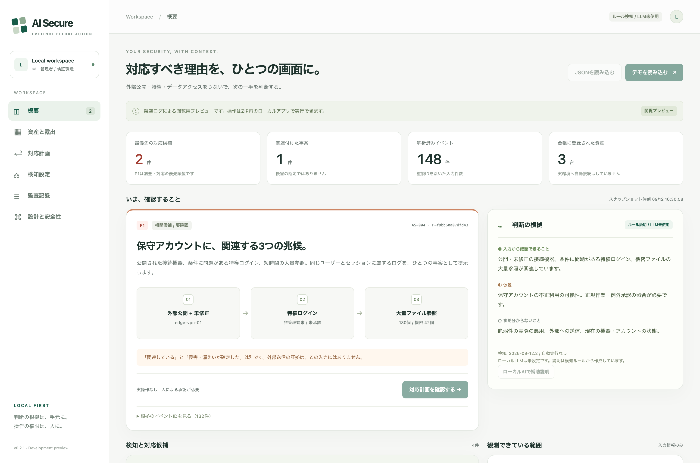
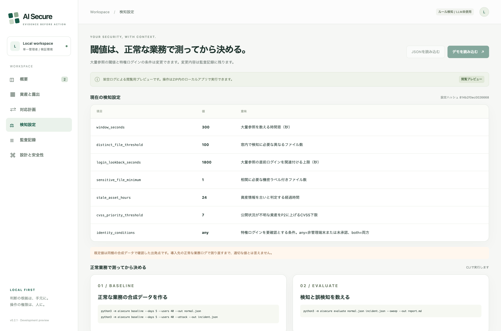

Evidence before action
Stop ranking alerts by CVSS.
Correlate the path instead.
AI Secure links an internet-facing unpatched gateway, a privileged login that fails its own conditions, and a burst of sensitive file reads into one reviewable case with its evidence attached. It runs entirely on your machine, needs no LLM, and it publishes what its own rules cost in false positives.
The number that started this
Everyone ships a “100 files in 5 minutes” rule.
Almost nobody publishes what it costs.
So we measured ours — on 18.5 days of synthetic but realistic business activity: nightly backups, analysts pulling reference material, a migration day, approved vendor maintenance on a personal laptop.
| Rule | Alerts | True positives | False positives |
|---|---|---|---|
| AS-003 — bulk file access, on its own | 36 | 1 | 35 |
| AS-004 — exposed gateway + privileged login + bulk access | 1 | 1 | 0 |
Raising the threshold until the bulk rule goes quiet also stops it detecting the incident. We swept 21 threshold and window combinations: every configuration with zero false positives also missed the planted breach.
That asymmetry is the entire product thesis. Volume on its own is not a signal — a backup job looks identical to an exfiltration. A path is.
Synthetic data. This is not a real-world false-positive rate; it is a rehearsal you re-run on your own logs before you trust a threshold. Full method, sweep table and caveats →
Quick start
No pip install. No API key. No cloud account.
Python 3.11 or newer is the only requirement. It binds to 127.0.0.1 with a fresh token each run.
git clone https://github.com/FORIFOR/AISecure.git && cd AISecure python3 -m aisecure serve --demo # Read your own logs — read-only, nothing is written back to the sources python3 -m aisecure import \ --source generic-auth-csv=auth.csv \ --source generic-file-access-jsonl=access.jsonl \ --out snapshot.json --quality quality.json # Measure what a threshold costs on normal business activity python3 -m aisecure baseline --days 5 --users 40 --out normal.json python3 -m aisecure evaluate normal.json incident.json --sweep --out report.md
Allowlisted fields only
CSV and JSON Lines are mapped through a declarative profile that can only name fields on an allowlist.
A profile that imports file contents or credentials cannot be written. Values that cannot be read stay null — never false.
Deterministic and tunable
Exposure, privilege reachability and behaviour combine into a priority. Thresholds are configuration, hashed and written to the audit chain, so nobody quietly turns the sensitivity down.
The human holds the authority
Each case separates observed from hypothesis from unknown, carries its evidence IDs, and states the business impact before anyone approves anything.
What it will not do
Written first, on purpose.
A security tool that only lists its strengths is not telling you enough to trust it.
- It does not monitor. It analyses a snapshot you hand it. Nothing runs continuously.
- It does not enforce. Every response plan is simulation-only. No code revokes a session, blocks traffic, or disables an account.
- It does not confirm a leak. “These files were read” and “this data left the building” are shown as different claims, because they are.
- No LLM decides anything. Detection is deterministic. The optional local model writes supplementary prose, gets no tools and no raw logs, and every reference it makes is checked before display.
- Unknown is never “safe”. A field that could not be read is counted as unknown, not assumed benign.
A self-review found and fixed four detection-evasion defects in the import boundary before release — including one where choosing a device name could silently overwrite another asset's exposure status. It is not a third-party audit. Read the review →
The interface
One screen, with the reasoning left in.


The interface is in Japanese; the CLI, the documentation and the evaluation reports are being translated.
Status
v0.2.1 — a local prototype, honestly labelled.
Useful today for
Studying detection logic that is legible end to end. Rehearsing a triage and approval workflow. And measuring what a threshold costs before you deploy one.
Not implemented
Live collectors, KEV and vendor advisory matching, SSO and RBAC, encryption at rest, external audit storage, real enforcement. This is not a production security control.
The next milestone is not more features. It is getting one organisation's real authentication, gateway and file-access logs through the importer, and measuring the false-positive rate over a period where nothing happened.
Built in response to the September 2026 disclosure of unauthorised access to Japan's Government Solution Service, where a Medium-rated, already-published vulnerability was exploited before the patch was applied and a maintenance account read a large number of files — precisely the case a CVSS-ordered queue handles badly. Nothing here reconstructs that incident; all bundled data is synthetic. Sources →